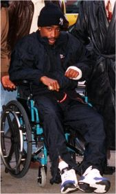
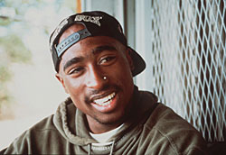

Since before the day he was born, Tupac Shakur has battled "the system"-but never so dramatically as in the last 48 hours of November. On the 29th, a Manhattan jury had convened to deliberate charges of sodomy, sexual abuse, and weapons possession against Tupac, 23, and his codefendant, Charles Fuller, 24. They stood accused of molesting a 19-year-old woman in Tupac's $750-a-night, 38th-floor Parker Meridien Hotel suite on November 18, 1993. After the first day of deliberations, Tupac left for a publicity stop in Harlem, then went on to Times Square's Quad Recording Studio to record a track with Uptown Records' Little Shawn. Facing a maximum 25-year sentence, Tupac knew it might be his last recording session for some time.
At 12:20 a.m., Tupac was running more than an hour late when he and his three-man entourage swept past a black man sitting on a desk in the entranceway of the office building where Quad is located. The man got up from the desk as two confederates (also black) came in the door, and the three followed Tupac and his crew to the elevator, pulled out guns, and hollered, "Give up the jewelry, and get on the floor!" While his friends lay on the gray stone floor, Tupac cursed at the holdup men and lunged for one of the guns. The rapper was shot at least four times. His manager Freddie Moore was hit once. The robbers nabbed $5,000 worth of Moore's jewelry, as well as Tupac's $30,000 diamond ring and $10,000 in gold chains. They left Tupac's diamond-encrusted gold Rolex.

Moore gave chase, collapsing in front of a strip club next door. His friends dragged the severely wounded Tupac into the elevator and up to the eighth-floor studio to administer first aid. Tupac's first call was reportedly to his mom, Afeni Shakur, in Atlanta; then he called 911. When the cops showed up, Tupac saw some familiar faces. Two of the first four police officers on the scene were William Kelly and Joseph Kelly (no relation), and "seconds later, Officer Craig McKernan arrived. McKernan had supervised the two Kellys in Tupac's arrest at the Parker Meridien and had just testified at the rape trial. "Hi, Officer McKernan," Shakur sputtered, lying naked in a pool of his own blood. "Hey, Tupac, you hang in there," McKernan responded, as an EMS team secured a brace around Tupac's neck and strapped him to a board. The stretcher didn't fit into the elevator, so he had to be propped upright, blood streaming down from his wounds. McKernan helped carry him out past a waiting photographer. "I can't believe you're taking my picture on a stretcher," Tupac groaned, flipping off the photographer.
Tupac was rushed to Bellevue Hospital. "He was hit by a low-caliber missile," says Dr. Leon Pachter, chief of Bellevue's trauma department. "Had it been a high-caliber missile, he'd have been dead." Tupac continued to bleed heavily all day, so at 1:30 p.m., Pachter and a 12-doctor team operated on the damaged blood vessel high in his right leg. At 4 p.m., he was out of surgery. At 6:45 p.m., against the vociferous complaints of his doctors, he checked himself out. "I haven't seen anybody in my 25-year professional career leave the hospital like this," says Dr. Pachter. Afeni, who had flown up from Atlanta, wheeled the heavily bandaged Tupac out the back door, fighting through a crowd of reporters.
The next day, Tupac made a surprise appearance in the Manhattan courtroom where his fate was being decided. He was wheeled in by Nation of Islam bodyguards, his charmed Rolex on his right wrist, his left wrist wrapped in gauze, and his bandaged head and leg covered by a wool-knit Yankees hat and a black Nike warm-up suit.
With his friends-including actors Mickey Rourke" and Jasmine Guy-rallied around, Tupac sat through the morning session before his right leg went numb. He then went uptown and secretly checked into Metropolitan Hospital Center on East 97th Street under the name of Bob Day.

Several hours later, the jury came back with verdicts on Tupac and Fuller: guilty of fondling the woman against her will-sexual abuse-but innocent on the weightier sodomy and weapon charges. A few jurors argued for full acquittal and viewed the verdict as a compromise. "There was a very strong feeling that there just was not enough evidence," says juror Richard Devitt.
"We're ecstatic that the jury found that there was almost no merit to these charges whatsoever," said Tupac's beaming lawyer, Michael Warren. He plans to appeal the sexual abuse conviction. Sentencing was delayed due to Tupac's condition, and he remained free on $25,000 bail.
For the second time in eight weeks, Tupac had beaten a felony rap. On October 7, in Atlanta, Fulton County DA Louis Slaton dropped the aggravated assault charges filed against Tupac on October 31, 1993. Tupac and his posse had shot two off-duty police officers in the buttocks and abdomen, but witnesses told the DA that Tupac and company had fired in self-defense after Officer Mark Whitwell fired at them. Whitwell resigned from the force seven months after the shooting.
Some conspiracy theorists leaped to the conclusion that Tupac had been set up and that the "robbery" was a payback for his perceived attacks on police; others concocted a revenge plot by the rape accuser. Tupac's lawyer fanned the flames, citing his' client's exaggerated suspicion of cops to explain his flight from the hospital.I The lawyer rejects the notion that this was a simple robbery: "These circumstances give rise for a reasonable person to raise an eyebrow."